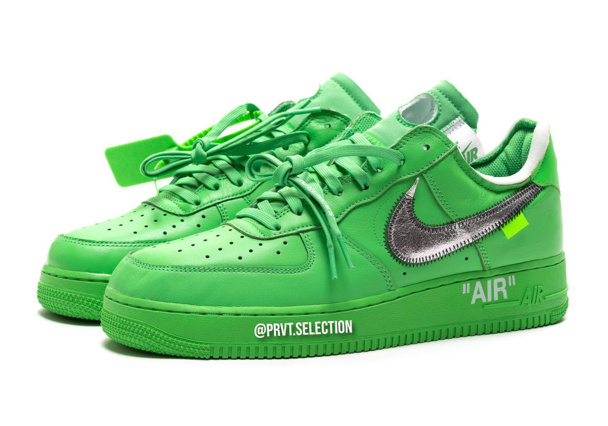
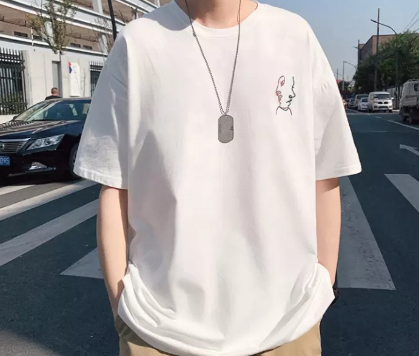

LOGO
INICIO
MENU
CONTACTO


Qué significa el concepto oversize en moda Esta palabra se traduce como extragrande, sobredimensionado o enorme. En moda, el estilo oversize no hace referencia a una prenda en concreto o solo a la ropa, sino también a los complementos. Los patrones en los diseños están pensados para que su acabado resulte XL.


